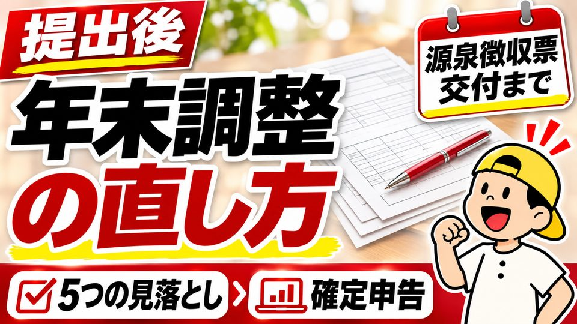
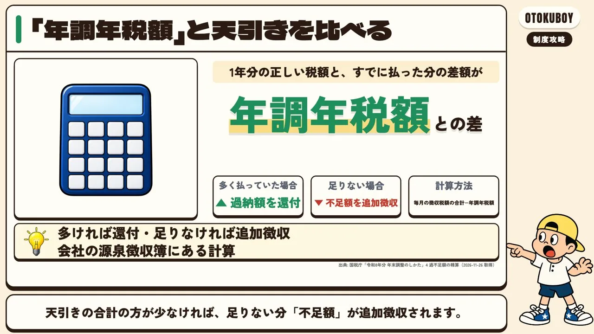
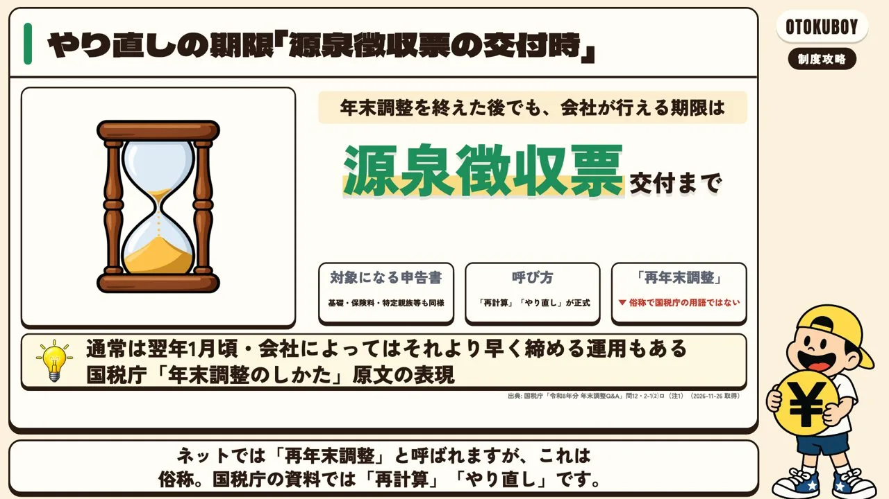
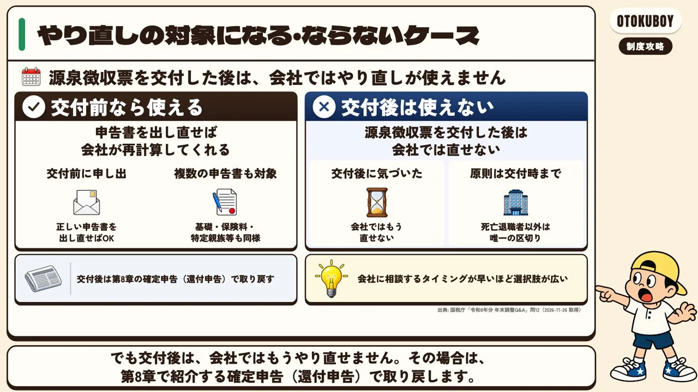
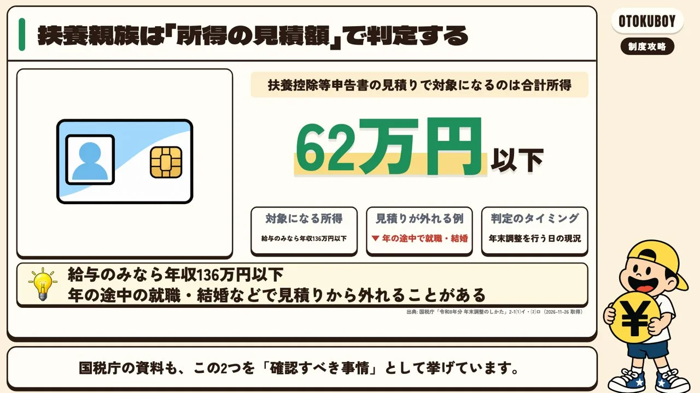
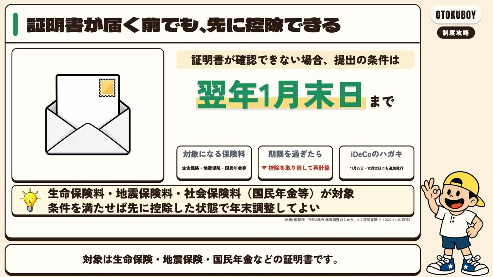
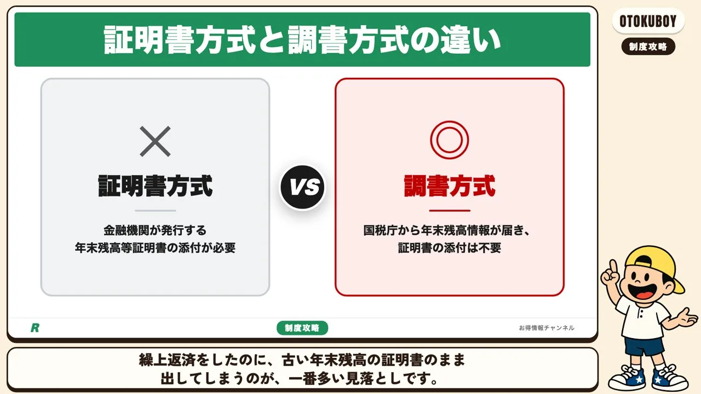
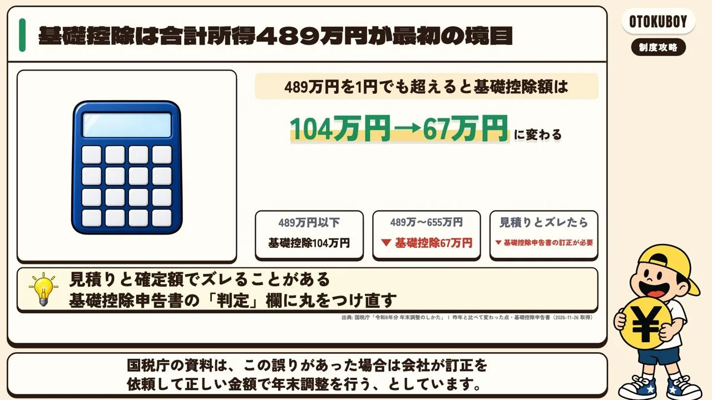
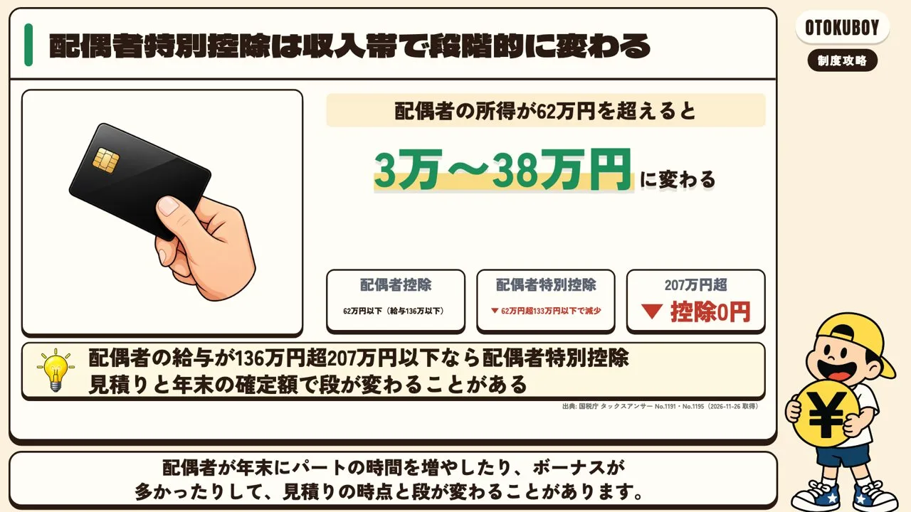
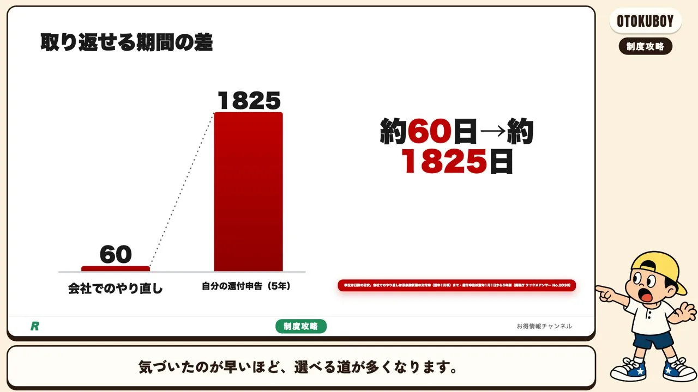

年末調整は、提出後に間違いに気づいても、いつまでなら会社で訂正できるのでしょうか。答えは、源泉徴収票を交付する時までなら会社で訂正できるということです。過ぎたら確定申告（還付申告）で5年間、自分で取り戻せます。2026年11月26日時点の国税庁の資料をもとに、訂正の期限と間違えやすい5つの見落としをまとめます。

▶ この記事の内容を動画で見る（お金の総合チャンネル）01給与明細で「還付」か「追加徴収」か確認する
年末調整は、1年間の正しい税額「年調年税額」と毎月の天引き合計を比べる手続きです。還付と追加徴収のどちらになるかは、この差で決まります。

給与明細の「所得税」欄が通常月より少ない・マイナス表記なら還付、多ければ追加徴収です。「年調過不足」欄がある会社は、プラスが還付、マイナスが追加徴収です。
還付は会社が12月分として納付する源泉徴収税額から差し引く形で、通常12月の給与でまとめて戻ります（1月に年末調整を行う会社は1月）。不足額も同様に徴収されます。
02年末調整の訂正はいつまでできる？
会社での訂正には期限があります。国税庁の「年末調整のしかた」では、翌年1月に「給与所得の源泉徴収票」を交付する時まで、年末調整の再計算を行うことができるとされています（会社の事務処理の都合で、それより早く締め切られることもあります）。

対象は配偶者控除等申告書だけでなく、基礎控除・保険料控除・特定親族特別控除の各申告書も同様です。
ポイント源泉徴収票が交付された後は、会社ではもう訂正できません。交付される前に気づけば、正しい申告書を会社に出し直すだけで再計算してもらえます。

訂正の手順は、①会社へ申し出る、②正しい内容で申告書を出し直す、③源泉徴収票の交付前に完了、の3ステップです。会社によって締切が早まるため、早めの確認が安心です。
03間違えやすい5つの見落とし
年末調整の訂正でよくあるのが、見積りの時点と年末に確定した金額がずれているケースです。5つの見落としを順に見ていきます。
①扶養親族の所得の見積もり
扶養控除等申告書に書く家族の所得は、年末調整時点の「見積額」です。対象は合計所得62万円以下（給与のみなら年収136万円以下）です。

年の途中で家族が就職や結婚をすると、扶養の見積りから外れることがあります。たとえば子のアルバイト収入を58万円と見積っていたのに年末に64万円で確定した場合、62万円超なら扶養から外れますが、100万円以下なら「特定親族」として別の控除の対象になり得ます。ずれていたら扶養控除等（異動）申告書を出し直してください。
②保険料控除の証明書
生命保険料・地震保険料・社会保険料（国民年金など）の証明書は、年末調整までに届かないことがあります。証明書が届く前でも、先に金額を書いて提出すれば控除できます。交付を請求中などで確認できない場合でも、翌年1月末日までに提出すれば、先に控除した状態で年末調整してよいとされています。

過ぎると控除が取り消され再計算されます。紛失時は、保険会社や国民年金基金連合会に早めの再発行依頼を。生命保険料控除の上限額については生命保険料控除の上限2026年版、23歳未満の扶養で変わる額で詳しく解説しています。
③住宅ローン控除2年目以降の残高のズレ
住宅ローン控除は1年目が確定申告必須で、2年目以降は年末調整の住宅借入金等特別控除申告書で控除を受けます。証明書方式は年末残高等証明書の添付が必要、調書方式は不要です。

年の途中で繰上返済や返済の遅れがあると、実際の年末残高が証明書の金額と違ってしまいます。繰上返済をしたら、古い証明書のままにせず正しい残高で出し直す必要があります。
例年末残高300万円の証明書のまま10月に200万円を繰上返済したケース。証明書の300万円で計算すると21万円の控除ですが、実際の残高100万円なら7万円が正しい控除額です。
残高が変わったら、実際の年末残高で正しい申告書を出し直します。証明書方式は金融機関に再発行を依頼、調書方式は返済計画表で自分の残高を確認します。
④基礎控除の区分
今年から基礎控除額は所得に応じて段階化され、合計所得489万円以下なら104万円、489万円超655万円以下なら67万円です（655万円超2,350万円以下まで続く）。

見積額489万円以下のつもりが、年末のボーナスなどで所得が確定し489万円を超えることがあります（例: 見積り480万円→確定495万円）。所得が境目をまたいでいたら、基礎控除申告書の訂正を会社に依頼します。
⑤配偶者の収入
配偶者の合計所得が62万円以下（給与のみ136万円以下）なら配偶者控除、62万円超133万円以下なら配偶者特別控除で所得が増えるほど段階的に減り、133万円超でゼロになります（給与では207万円超で0円）。

配偶者のパート収入やボーナスが見積りより増え、段階がずれることがあります（例: 見積り60万円→確定68万円）。配偶者の所得が見積りより増えていたら、配偶者控除等申告書を出し直します。
04期限を過ぎたら確定申告（還付申告）で取り戻す
源泉徴収票の交付後に気づいた場合、会社では訂正できません。自分で確定申告書を税務署に提出する「還付申告」で取り戻します（会社への申出がなくても確定申告で還付を受けられます）。
還付申告は翌年1月1日から5年間できます（2026年分なら2027年1月1日〜2031年12月31日）。2021年分の見落としは2026年12月31日が期限でまもなく締め切られます。

必要なのは確定申告書・控除証明書類・本人確認書類（源泉徴収票は添付不要）。提出先は税務署窓口・郵送・e-Taxで、確定申告書等作成コーナーなら金額入力だけで作成できます。
注意還付申告は義務ではなく、したい人がする手続きです。やらなくても罰則はありませんが、取り戻せる税額もそのままになります。
05よくある質問
年末調整の還付申告と、確定申告の修正申告は同じですか？
いいえ。年末調整の見落としを取り戻すのは還付申告です。修正申告・更正の請求は確定申告をした人が内容を直す手続きで、確定申告をしない会社員は還付申告を使います。
年末調整が終わった後に扶養家族が増えたらどうなりますか？
控除対象扶養親族にあたるかどうかは、その年の12月31日の現況で判定します。年末調整が終わっていても、源泉徴収票を交付する前に扶養控除等（異動）申告書を出せば、やり直しの対象になります。
住宅ローン控除は1年目から年末調整できますか？
できません。1年目は確定申告が必須で、年末調整で控除できるのは2年目以降だけです。1年目の確定申告後、税務署から住宅借入金等特別控除申告書が送られてきます。
06まとめ：源泉徴収票を交付する前なら会社で訂正できる
結論間違いに気づいたら、まず給与明細の「所得税」欄を確認してください。源泉徴収票が交付される前なら会社に相談を、過ぎていたら確定申告（還付申告）で5年間、取り戻せます。
- 年末調整の訂正は、源泉徴収票を交付する時まで会社で対応できます（通常は翌年1月頃、会社により早まることもある）。
- 間違えやすいのは、扶養親族の所得見積り、保険料控除の証明書、住宅ローン控除の残高、基礎控除の区分、配偶者の収入の5つです。
- 期限を過ぎていたら、確定申告（還付申告）で翌年1月1日から5年間、自分で取り戻せます。
この記事は2026年11月26日時点の国税庁の資料をもとにしています。詳しい条件は勤務先や税務署、国税庁の公式ページで確認してください。ふるさと納税、12月31日までにやることもご覧ください。